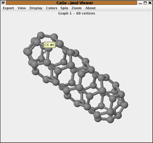

Jmol, a 3D viewer
Before we introduce our first viewer, let us remind you that all viewer windows are shown in conjunction with the results window, which controls what particular graph is shown by each of the viewers. The Jmol screenshot includes a part of the results window to stress that point, but the following pages will show just the viewers.
Jmol is an external Java program developed as a part of the OpenScience project and now taken over to SourceForge. It exists both as a stand-alone application and an applet, and the application is actually more than just a molecule viewer: animations, measurements, opening and saving files are some of the features.
This screenshot
shows Jmol displaying the first of our 1812 C60
fullerenes. There are two status areas above and below the actual applet,
one used by CaGe for some information about the graph and the other used
by Jmol for its own messages. You can drag the mouse in the Jmol area
to rotate the molecule around its center. Press Shift while dragging to
zoom in and out, and press Control in combination with the right mouse button to translate the molecule.
Jmol is completely written in Java. It is Open Source software like CaGe itself and the 3D viewer of our choice. Jmol shows molecules strictly as we ask it to, while other chemistry programs force chemical restrictions by adding bonds automatically where they think they can infer them. From a graph-theoretic point of view, adding bonds is of course an unacceptable alteration of the molecule generated by CaGe. This is the main problem with the popular Rasmol viewer applied to graphs that are not really realistic as molecules. Nevertheless CaGe does support Rasmol as an alternative to Jmol.

| Viewing
results |
||